Universidad Central de Venezuela
Facultad de Ciencias
Escuela de Computación
Trabajo Especial de Grado
Aplicación web para la gestión de espacios físicos de la Facultad de Ciencias de la Universidad Central de Venezuela
Agenda
Introducción
Introducción
- Desafío actual: Evolucionar para ofrecer entornos óptimos de docencia, investigación y extensión.
- Infraestructura clave: Aulas, laboratorios y auditorios requieren coordinación para su aprovechamiento óptimo.
- Necesidad: Información oportuna de disponibilidad, capacidades y recursos para planificar sin conflictos.
- Potencial tecnológico: Web, visualización inmersiva e IA para centralizar información y apoyar decisiones.
Contexto de la investigación
Contexto de la investigación
Institución
- Facultad de Ciencias (UCV)
- Docencia | Investigación | Extensión
Estructura
- 5 Escuelas
- 4 Institutos de investigación
Institución
- Facultad de Ciencias (UCV)
- Docencia | Investigación | Extensión
Problema de investigación
Planteamiento del Problema
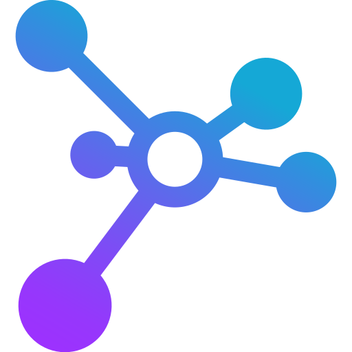
Gestión descentralizada
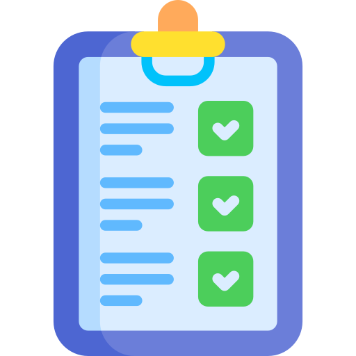
Proceso manual
Sin sistema unificado
Problemática Inicial
Cada dependencia maneja su proceso de solicitud de reservas de forma manual:
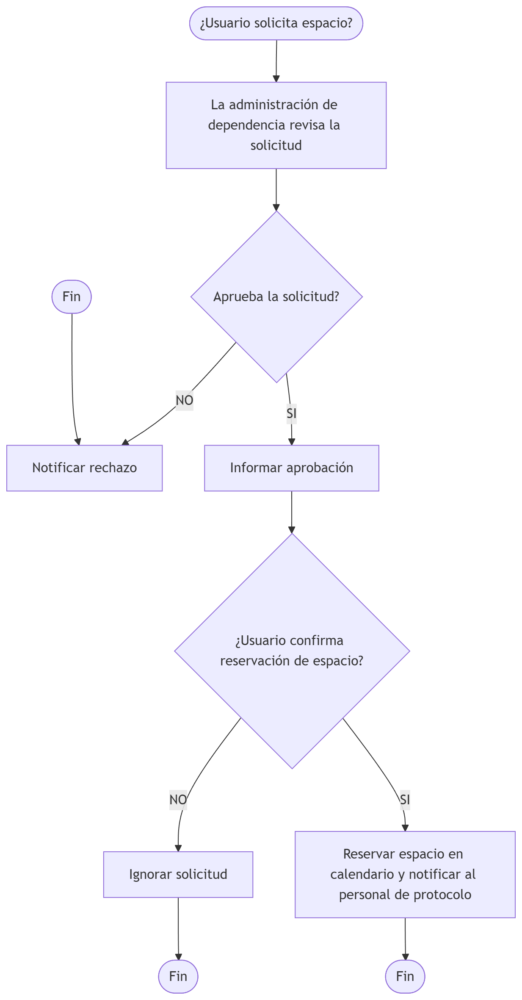
Pregunta de Investigación
¿Qué solución tecnológica podría sistematizar y automatizar el proceso de gestión de los espacios físicos de las dependencias de la Facultad de Ciencias de la UCV, con el propósito de centralizar las operaciones y minimizar los errores logísticos?
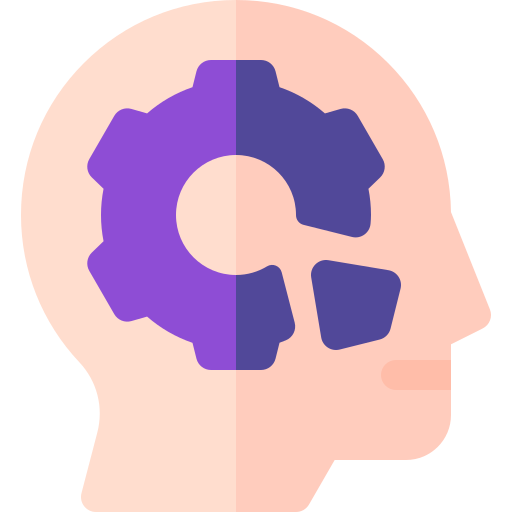
Objetivos y Justificación
Objetivo General
Desarrollar la aplicación web SIGE, orientada a centralizar y automatizar la administración de la infraestructura física de la Facultad de Ciencias.
Objetivos Específicos
- Analizar los requerimientos funcionales y no funcionales del sistema.
- Diseñar la arquitectura del sistema y el modelo de la base de datos.
- Diseñar la interfaz de usuario enfocada en la usabilidad (UX/UI) adaptada a los diferentes roles.
- Desarrollar los módulos funcionales de gestión de espacios, procesamiento de reservas, panel administrativo y control de usuarios.
- Integrar un sistema inmersivo de recorridos virtuales interactivos 360°.
- Evaluar la funcionalidad y usabilidad mediante pruebas formales con usuarios.
- Desplegar la aplicación web en un VPS de la UCV.
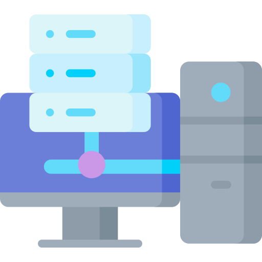
Justificación
Práctica
- Centraliza inventario
- Disponibilidad en tiempo real
- Reduce solapamientos
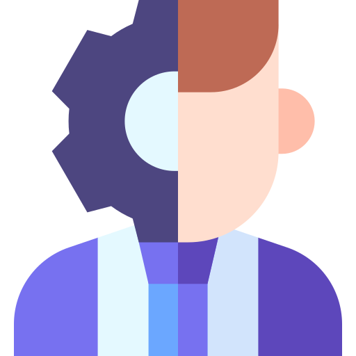
Tecnológica
- Digitalización de procesos
- Recorridos virtuales 360°
- Chat + notificaciones
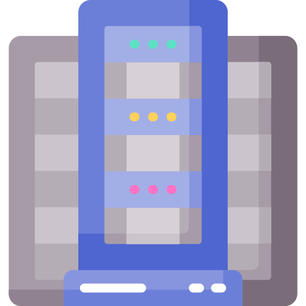
Institucional
- RBAC
- Auditoría + reportes
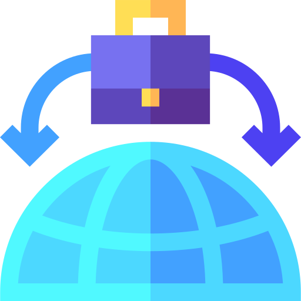
Social
- Transparencia
- Mejor experiencia de usuario
Alcance Funcional - Módulos
🔹 Mecanismos de seguridad para registro e inicio de sesión, garantizando acceso según rol.
✅ Gestión de Inventario y Espacios 🏛️:🔹 Administración digital de infraestructura: dependencias, espacios y recursos.
✅ Recorridos Virtuales e Inmersión 🌐:🔹 Exploración visual 360° con reconocimiento de gestos (IA) para control sin periféricos.
✅ Gestión de Reservas 📅:🔹 Flujo centralizado: calendarios interactivos y aprobación/rechazo de solicitudes.
✅ Comunicación en Tiempo Real 💬:🔹 Sistema de mensajería (chat) y notificaciones automáticas sobre el estado de solicitudes.
✅ Auditoría y Reportes 📈:🔹 Estadísticas de uso y registro histórico inalterable de acciones administrativas.
Alcance Funcional - Roles
🔹 Acceso libre para consultar catálogo de espacios y realizar recorridos virtuales.
🏛️ Usuario de la Comunidad:🔹 Miembros autenticados: generan solicitudes de reserva, gestionan perfil y se comunican vía chat.
👁️ Administrador Lector:🔹 Permisos de visualización: consulta reportes y calendarios sin modificar configuraciones.
✅ Administrador de Solicitudes:🔹 Procesa (aprueba/rechaza) solicitudes de reserva y gestiona comunicación vía chat.
🏢 Administrador de Dependencia:🔹 Control total sobre espacios y recursos de su dependencia específica.
⚙️ Superadministrador:🔹 Control global: configuración del sistema, gestión de usuarios/roles y acceso irrestricto.
Fundamentos teóricos
Aplicaciones Web
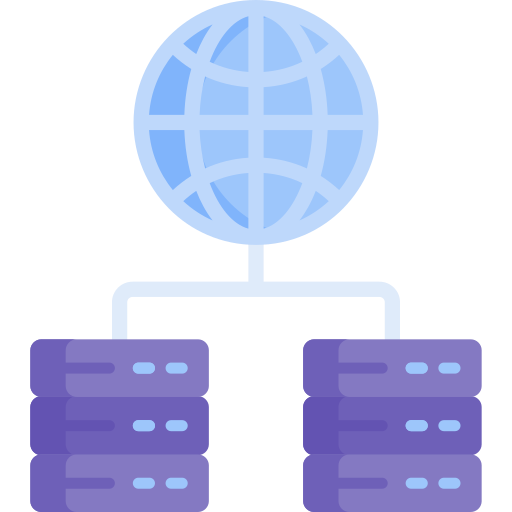
InteroperabilidadFuente: Luján (2002). https://rua.ua.es/dspace/handle/10045/16995
Arquitectura Cliente - Servidor
API
Una interfaz de programación de aplicaciones es un software intermediario que permite que las aplicaciones se comuniquen entre sí.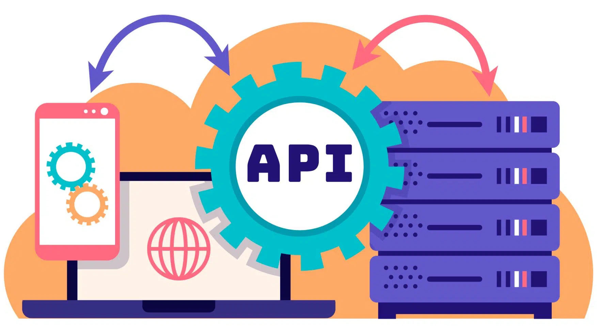
Fuente: IBM (s.f.). https://www.ibm.com/topics/api
Frameworks
Herramientas que simplifican el desarrollo de aplicaciones web.Frontend
• Next.js ⚛️ • Angular 🅰️ • Vue.js 💚¿Por qué usar Frameworks?
• Estructura y organización 📂 • Seguridad integrada 🔑 • Desarrollo más rápido 🚀 • Mayor escalabilidad 🌍Backend
• Fastify ⚡ • Django 🐍 • Spring Boot 🌱Fuente: Johnson (2004).
Patrón MVC Distribuido
Componentes
🗄️ Modelo (Backend + BD) → Prisma ORM + PostgreSQL: esquemas de datos, reglas de negocio, integridad referencial 🖥️ Vista (Frontend Separado) → Next.js: SSR para portal público, CSR para panel administrativo 🎮 Controlador (API Backend) → Fastify: procesa solicitudes, coordina lógica de negocio, autorización por rolesVentajas
🔒 Separación de responsabilidades: Cada capa optimizada para su función específica 🔄 Evolución independiente: Cambios en políticas sin afectar UI ni estructura de datos 🛡️ Seguridad por capas: Lógica crítica protegida en el servidor, inaccesible desde navegadoresMonorepositorio
Estrategia de arquitectura donde múltiples proyectos relacionados se almacenan en un único repositorio de control de versiones.Ventajas en SIGE
📦 Sincronización de modelos de datos ♻️ Reutilización de componentes UI ⚡ Gestión atómica de cambios 🔄 Dependencias compartidas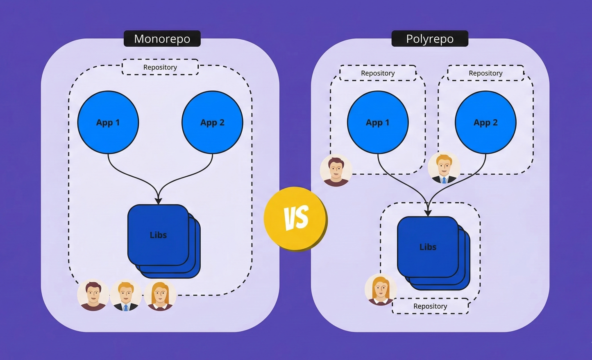
Herramientas
🚀 Turborepo ➡️ Build system incremental 📦 pnpm ➡️ Gestor de dependencias eficiente 🔧 Workspaces ➡️ Múltiples proyectos ⚙️ TypeScript ➡️ Tipos compartidosFuente: Lerner (2020); Vercel (2023).
WebSockets
Protocolo de comunicación bidireccional que permite comunicación en tiempo real entre cliente y servidor.Aplicaciones en SIGE
💬 Chat contextual por reserva 🔔 Notificaciones instantáneas 📅 Actualizaciones de disponibilidad 🔄 Sincronización en vivoVentajas
⚡ Comunicación full-duplex 🔌 Conexión persistente 📉 Menor latencia que HTTP 🚀 Eventos en tiempo realFuente: Fette & Melnikov (2011). https://tools.ietf.org/html/rfc6455
Edge AI
Inteligencia Artificial ejecutada en el cliente para reconocimiento de gestos y navegación natural.Características
👋 Reconocimiento de gestos de mano 😊 Detección facial 🎯 Procesamiento local 🔒 Privacidad garantizada
Uso en SIGE
🌐 Navegación en recorridos 360° ♿ Accesibilidad mejorada 🎮 Interfaz natural e inmersiva ⚡ Sin carga en el servidorFuente: Google (2023). https://developers.google.com/mediapipe; Google AI (2019). https://ai.googleblog.com/2019/08/on-device-real-time-hand-tracking-with.html
Bases de datos SQL
Modelo de bases de datos relacionales basado en tablas.Ventajas
🔒 Integridad de datos (ACID) 📊 Relaciones entre tablas 📝 Consultas complejas con SQL ✅ Transacciones confiables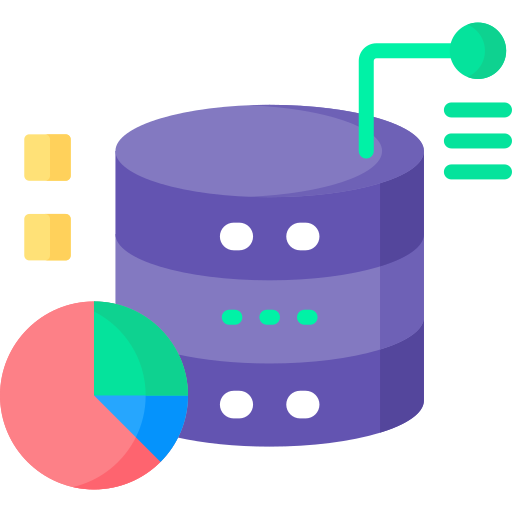
Tipos
PostgreSQL ➡️ Open Source 🐋 MySQL ➡️ Popular y rápido ⚡ SQL Server ➡️ Microsoft 📊 Oracle ➡️ Empresarial 👨💼Fuente: Silberschatz et al. (2019).
Tecnologías 3D en Apps Web
Uso de gráficos 3D en aplicaciones web para crear experiencias interactivas.Aplicaciones
🏛️ Tours virtuales 🛒 Visualización de productos en e-commerce 🎮 Videojuegos en navegador 📍 Mapas y simulaciones interactivasTipos
🌍 WebGL ➡️ API de gráficos 3D en navegadores 🎮 Three.js ➡️ Renderizado 3D en WebGL 🕹️ Babylon.js ➡️ Motor gráfico 3D avanzado 🕶️ WebVR ➡️ Realidad Virtual en la webFuente: Khronos Group (2011). https://www.khronos.org/registry/webgl/specs/latest/1.0/; Cabello (2018). https://threejs.org/
Control de versiones
Sistema que registra modificaciones en archivos y permite restaurar versiones anteriores.Beneficios
🕒 Historial de cambios 👥 Colaboración en equipo 🔄 Recuperación de versiones 🚀 Integración con CI/CD
Fuente: Chacon & Straub (2014).
VPS
Un servidor virtual privado es una maquina que aloja todo el software y los datos necesarios para ejecutar una aplicación o un sitio web. Divide un servidor físico en múltiples entornos virtuales independientes.Ventajas
⚡ Mejor rendimiento que un hosting compartido 🔒 Mayor seguridad y control 🔧 Posibilidad de personalización 📈 Escalabilidad según demandaFuente: Mansoor (2017).
Tecnologías de desarrollo
Tecnologías de Orquestación
pnpm
Gestor de dependencias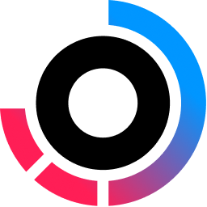
Turborepo
Build system para monorepos
Git
Control de versiones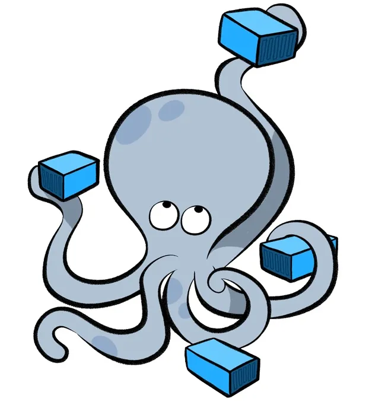
Docker Compose
Orquestación de contenedoresTecnologías del lado del Cliente
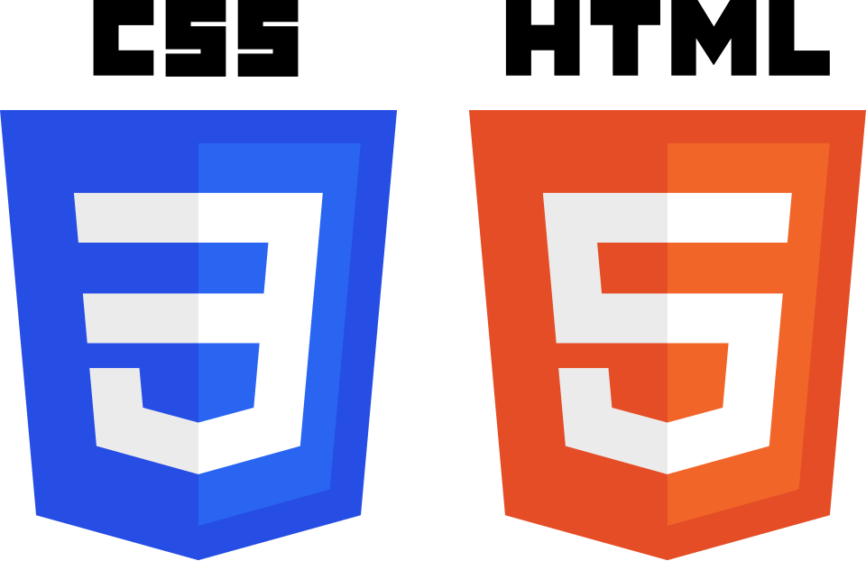
HTML/CSS
Estructura y estilos
JavaScript
Interactividad y lógicaTypeScript
JS con tipado estático
React
Biblioteca para UI
Next.js
Framework de ReactThree.js
3D en WebGLMediaPipe
Visión Artificial
GSAP
Animaciones webFramer Motion
Animaciones de transición
Tailwind CSS
Framework de utilidades CSSZustand
Estado global minimalistaTanStack Query
Estado del servidorTecnologías del lado del Servidor

Node.js
JavaScript en el servidorFastify
Framework de Node.js
PostgreSQL
Base de datos SQLPrisma
ORM para Node.jsMinIO
Almacenamiento de objetos
Docker
ContenedorizaciónTypeBox
Validación de esquemas JSONWebSockets
Comunicación en tiempo realMetodología
Modelo de Desarrollo
- Modelo Incremental e Iterativo
- Gestión Ágil con Kanban
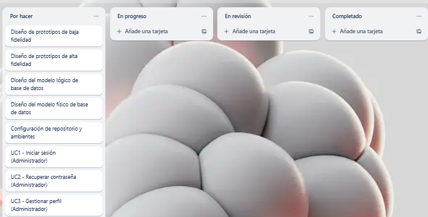
Fases del Ciclo de Desarrollo
- Análisis y Planificación Continua
- Diseño y Modelado de Arquitectura
- Implementación Modular y Codificación
- Pruebas, Integración y Refinamiento
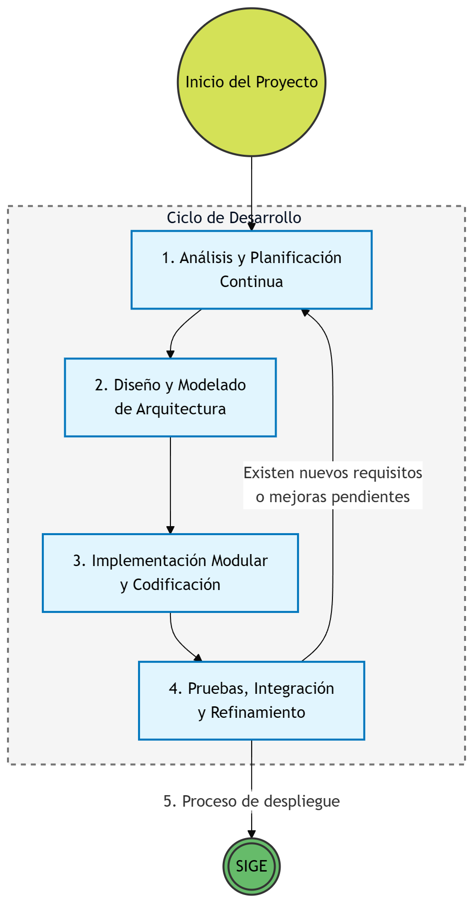
1. Análisis y Planificación Continua
- Identificación de Actores
- Análisis de Requerimientos
Requerimientos Funcionales
Portal de Usuario
- Todos los usuarios
- No autenticados
- Autenticados
Requerimientos Funcionales
Panel de Administración
- Administrador Lector
- Administrador de Solicitudes
- Administrador de Dependencia
- Superadministrador
Requerimientos No Funcionales
- Arquitectura y Escalabilidad
- Rendimiento
- Seguridad
- Usabilidad
2. Diseño y Modelado de Arquitectura
- Arquitectura del Sistema
- Modelo de Datos
- Diseño de Interfaces
Arquitectura del Sistema
- Capa Cliente
- Capa Servidor
- Capa de Persistencia
Diagrama de Arquitectura
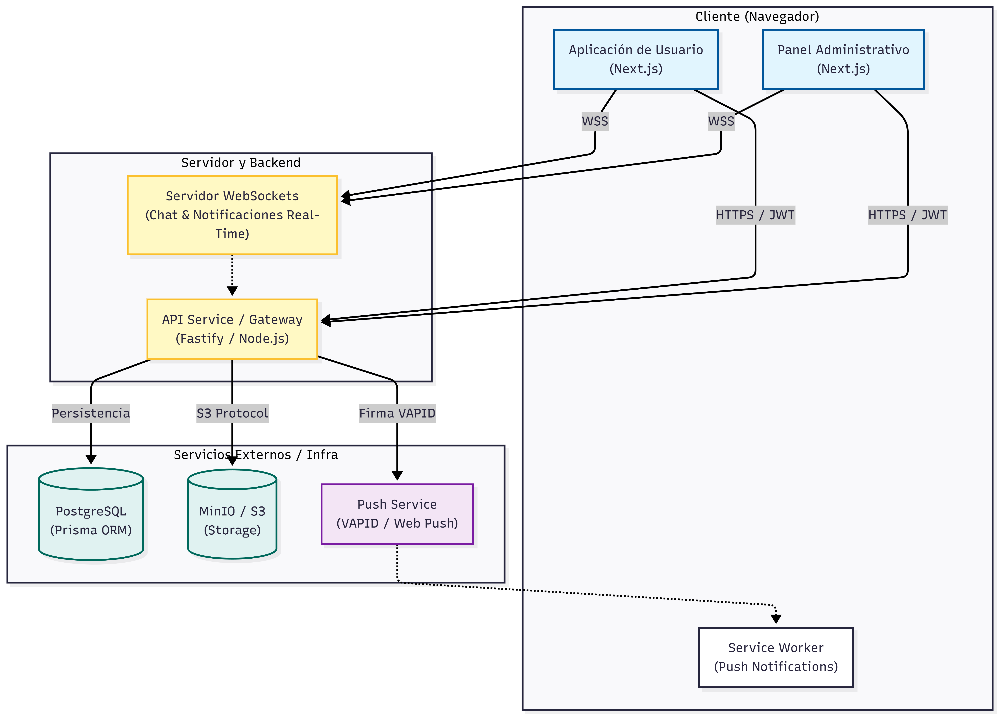
Modelo Entidad-Relación
Mapa de Navegación - Portal de Usuario
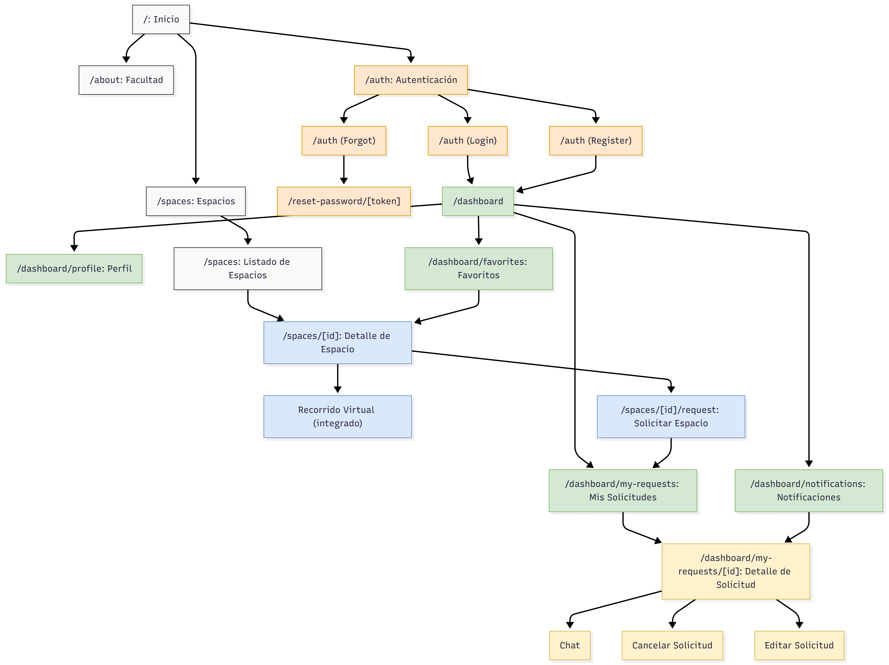
Mapa de Navegación - Panel de Administración
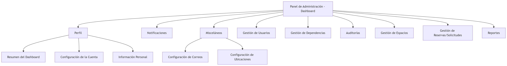
3. Implementación Modular y Codificación
- Tecnologías Clave
- Desarrollo Incremental
Desarrollo de Módulos
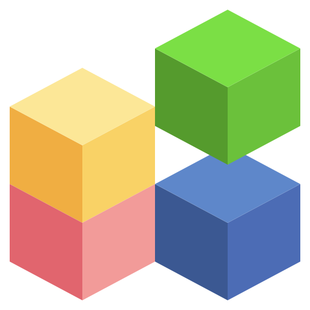
- Enfoque Modular
- Cronograma Consolidado
- Módulos Implementados
Módulos de Funcionalidad Principal
- Autenticación
- Espacios
- Reservas
- Recorridos Virtuales
Módulos de Soporte y Administración
- Usuarios
- Chat en Tiempo Real
- Notificaciones Push
- Auditoría
- Reportes
4. Pruebas, Integración y Refinamiento
- Pruebas Funcionales por Roles
- Pruebas de Usabilidad
- Pruebas de Integración
- Pruebas de Compatibilidad
- Refinamiento Continuo
Resultados
Organización de Resultados - 8 Módulos Funcionales
- Sistema Integral de Gestión de Espacios
- Monorepo: 3 aplicaciones
- 8 módulos integrados
- Despliegue institucional
Módulos Principales (1/2)
- Gestión de Perfiles
- Gestión de Espacios
- Reservas y Solicitudes
- Comunicación en Tiempo Real
Módulos Principales (2/2)
- Recorridos Virtuales e Interacción Avanzada
- Reportes
- Administración del Sistema
- Auditoría
Despliegue de la Aplicación
Despliegue de la Aplicación
- Infraestructura: Despliegue realizado en un Servidor VPS de la UCV.
- Contenedorización: Aislamiento de servicios utilizando Docker y Docker Compose para garantizar reproducibilidad.
- Entornos seguros: Implementación estricta del protocolo HTTPS y encriptación de datos sensibles.
Conclusiones
Conclusiones
¿Se cumplieron los objetivos?
- Análisis + diseño
- Implementación modular
- Evaluación + despliegue
¿Qué se logró?
- Centralización + automatización
- Roles + auditoría/reportes
- 360° + tiempo real
¿Qué se concretó?
- Portal de usuario + panel admin + API
- 8 módulos integrados
- Sistema desplegado (UCV)
Recomendaciones
Recomendaciones Institucionales
- Adopción formal del sistema: Oficializar SIGE como única plataforma vinculante para reserva y gestión de espacios, mitigando resistencia al cambio y evitando redundancia operativa.
- Capacitación de usuarios: Diseñar programa de inducción institucional utilizando los Manuales de Usuario y Administrador como guía fundamental para estandarizar el proceso.
- Integración con normativas: Articular flujos de trabajo con calendarios académicos y sistemas de control de estudios para priorización automática según planificación semestral.
Recomendaciones Técnicas
- Mantenimiento y sostenibilidad: Establecer protocolo con monitoreo de recursos del servidor, respaldos automáticos de base de datos y actualización periódica de dependencias para parchear vulnerabilidades.
- Autenticación centralizada: Integrar inicio de sesión con servicios de directorio institucional de la UCV, eliminando gestión de credenciales separadas.
- Notificaciones ampliadas: Incorporar alertas vía correo electrónico institucional o SMS/WhatsApp sobre aprobación, rechazo o modificación de reservas.
- Expansión funcional: Desarrollar aplicación móvil nativa, soporte WebXR para dispositivos VR dedicados y extensión a otras facultades aprovechando arquitectura escalable.
📚 Referencias
🙏 Gracias